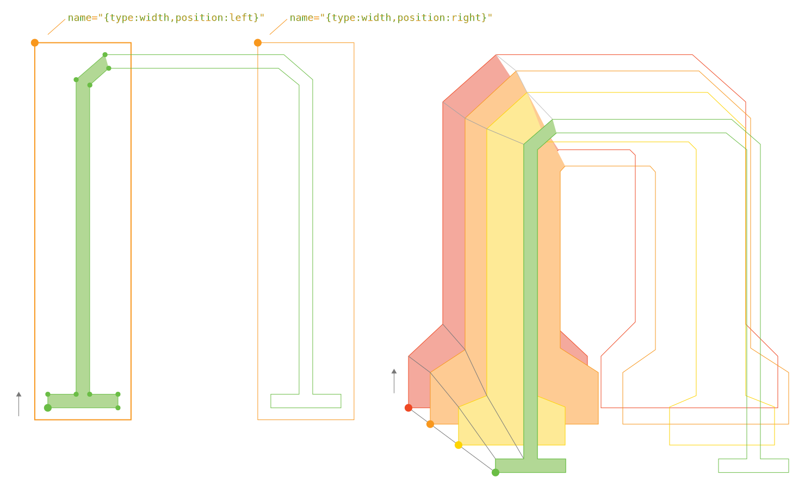
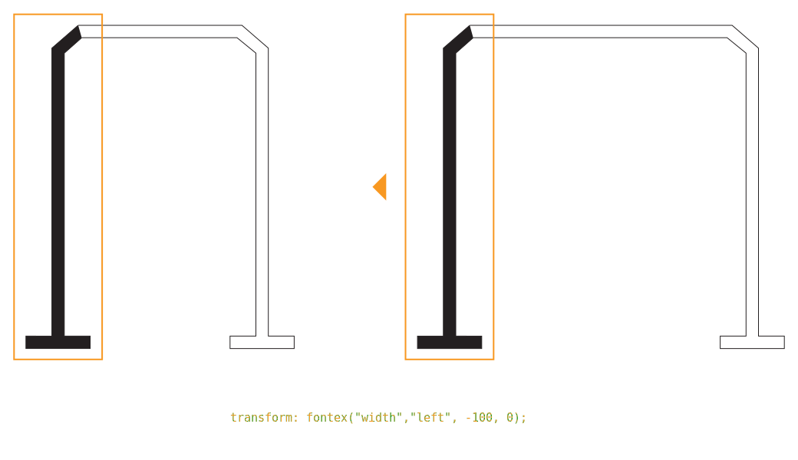
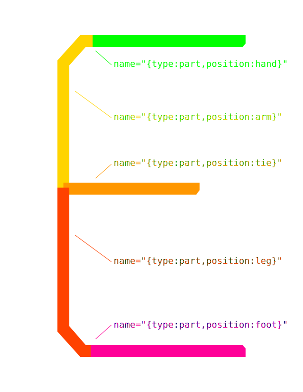

Preface
SYFF (Synthetic Font Functions), IPA: [/saɪff/ >= /sɪff/], is an Open Source project of VivaRado, Think of it as CSS but for fonts.
Introduction
SYFF (Synthetic Font Functions) is a set of cascading functions that recombine and alter a set of initially provided letters to create new letters.
Contributors:
- VivaRado support@vivarado.com
- Andreas Kalpakidis
- Madina Akhmatova
Introduction / Profile
- Company: VivaRado LLP
- Designer: Andreas Kalpakidis
- Twitter: @vivarado
- Google Group:VivaRado Typography Google Group
Introduction / Project Overview
- Project Name: SYFF (Synthetic Font Functions)
- Code Name: Recombinator
- Test Type Family: Aeolus
- Proposal Date: 28/05/2022
Introduction / Organisational Documents
Documentation Types:
- HTML - Responsive preview in HTML format - At README directory
- Standard Repository README - At the root of the repository
- PDF - At the root of the repository
Features:
- Responsive Interface
- Synchronized Sidebar
- Hashtag Navigation
- PDF with TOC and Cover
- Multilingual Publishing
Drawbacks:
- Monospace font used in PDF due to kerning issues.
Introduction / Phase Introduction
For the sake of simplicity we will only present the following phases:
- Initiation Phase
- Planning Phase
Introduction / Phase Introduction / Initiation Phase
Initiation Phase Components ∞0.001:
- Business Case:
- Strategic case
- Management case
- Business Case:
Introduction / Phase Introduction / Initiation Phase / Business Case
We want to get lots of letters from a few, by running recombining and altering functions whose instructions look like CSS.
While working with Advent the Variable variant, we noticed the multiplicity of instances that makes variable fonts great, is exactly what bores the human as a function has to be repeated across all of them. We decided to test a few functions that would take a set of initial letters and twist and stretch them to the point of creating the whole capital letter encoding of three languages, and here is the initial plan for that., since the script we call "recombination" was reusing letters after some functions where applied to them or cascading, a floating idea was to also make these instructions more approachable to the designer by making them appear similar to CSS.
- Business Case Components ∞0.001:
- Strategic case
- Management case
- Achievability
Introduction / Phase Introduction / Initiation Phase / Business Case / Strategic case
The ability to have a set of simple looking instructions that reduce the repetitive nature of letters would increase the time spent on actually designing the look of the font and improve the time it takes to increase linguistic coverage and deploy the font. Most importantly you can still meddle with your font after the scripts are done doing what you told them.
Introduction / Phase Introduction / Initiation Phase / Business Case / Management case
The management case tests the feasibility of the preferred option, in terms of its deliverability within various tolerances.
Achievability:
We have been working with editing fonts with code for a few years now and much of the code and font plumbing existed from projects like Variomatic or VRD TYPL, the one piece we needed was to make the otherwise complicated list of instructions inside the recombination script, a little more readable and implement a CSS like parser, for that we chose to harvest CSSUtils code.
Introduction / Phase Introduction / Initiation Phase / Business Case / Management case / Achievements Plan
- Milestones
- Recombination Script
- Synthetic Font Functions (SYFF Parsing)
- Dependencies
- In Lib
- Skillset Requirements
- Variable Font comprehension.
- Python Programming
- Web Application Development
- Type Design
- 2D Vector Math
Introduction / Phase Introduction / Initiation Phase / Project Charter
- Project Charter Components ∞0.001:
- Project Introduction
- Project Goals
- Deliverables
- Duration
Introduction / Phase Introduction / Initiation Phase / Project Charter / Project Introduction
Project Introduction Components ∞0.001:
- Project Statements
- Vision Statement
- Mission Statement
- Project Definition
- Problem
- Opportunity
- Project Statements
Introduction / Phase Introduction / Initiation Phase / Project Charter / Project Introduction / Project Statements
Vision Statement:
To make SYFF (Synthetic Font Functions) a viable tool in the belt of the type designer.
Mission Statement:
To make the idea of using SYFF (Synthetic Font Functions) functions the norm during font development and design.
Introduction / Phase Introduction / Initiation Phase / Project Charter / Project Goals
- Goals for ∞ 1.00:
- Cascading recombining functions
- SYFF Parsing
- Media Query Defined Instance
- Basic Alterations:
- Copy
- Transform
- Mirror
- Fontex
- Partial
- Goals for ∞ 2.00:
- Add to Alterations
Introduction / Phase Introduction / Initiation Phase / Project Charter / Deliverables
- Deliverables Components ∞0.001:
- SYFF (Synthetic Font Functions)
- Aeolus Font
Introduction / Phase Introduction / Initiation Phase / Project Charter / Duration
Duration of SYFF ∞1.00:
- 01/04/2022 to 31/05/2022.
Duration of SYFF ∞2.00:
- Stakeholder Decision Pending.
Duration of Aeolus ∞1.00:
- Depends on SYFF ∞1.00.
Introduction / Phase Introduction / Planning Phase
The Planning Phase, is where the project solution is further developed in as much detail as possible and the steps necessary to meet the project’s objectives. The project's Work Plan / Project Plan is created outlining the activities, tasks, dependencies, and timeframes.
The Planning Phase consists of:
- Project Plan:
- Work Plan:
- Schedule Plan:
- Stakeholders
- Quality Plan (PQP)
Introduction / Phase Introduction / Planning Phase / Project Plan
Decide on the encoding sets and supported language scripts. Decide and plan the weights and how you will generate each weight. Understand the procedures and steps. Calculate or keep track of timelines, steps procedures and pitfalls.
- Project Plan Components ∞0.001:
- Design
- Production
- Alteration Functions
Introduction / Phase Introduction / Planning Phase / Project Plan / Design
BUMP
Introduction / Phase Introduction / Planning Phase / Project Plan / Production
BUMP
Introduction / Phase Introduction / Planning Phase / Project Plan / Syntax
The selector represents to the letter you want to create and the attribute in the square brackets represents the source of that letter.
The declaration block contains one or more declarations separated by semicolons.
Each declaration includes a SYFF property name and a value, separated by a colon.
Multiple SYFF declarations are separated with semicolons, and declaration blocks are surrounded by curly braces.
SYFF selectors outside of Instance Queries, apply to all the instances of a given font. Selectors inside Instance Queries apply to specific instances of the font, like Media Queries with devices or sizes.
Introduction / Phase Introduction / Planning Phase / Project Plan / Syntax / Blocks
Initial Letter Definitions####
Π {
out: "P_i";
}
Synthesized Letter Definitions####
/* produced (character) [ receiving (character) = "name, unicode" ] */
Ш [ Π = "uni0428, 0428" ] {
transform: fontex("width","right", 100, 0);
transform: mirrorX();
}
Introduction / Phase Introduction / Planning Phase / Project Plan / Syntax / Instance Query
SYFF selectors outside of Instance Queries, apply to all the instances of a given font. Selectors inside Instance Queries apply to specific instances of the font, like Media Queries and devices or sizes.
/* Define the existing letter */
A {
out: "A_lpha";
}
/* Translate -50 for all instances */
Α [ A = "Alpha, 0391" ] {
transform: translate(-50, 0);
}
@instance ("bold") {
/* Translate another -20 for only bold instance */
Α [ A = "Alpha, 0391" ] {
transform: translate(-20, 0);
}
}
Introduction / Phase Introduction / Planning Phase / Project Plan / Alteration Functions
Review and document the Alteration Functions:
- Copy
- Transform
- Mirror
- Fontex
- Partial
Introduction / Phase Introduction / Planning Phase / Project Plan / Alteration Functions / Copy
The definition of a SYFF rule is a copy function.
A [ B = "name, unicode" ] {}
Introduction / Phase Introduction / Planning Phase / Project Plan / Alteration Functions / Translate
Translate a partial or the whole letter.
A [ B = "name, unicode" ] {
transform: translate("partial_name", X, Y);
transform: translate(X, Y);
}
Transform Translate Function: ####
transform: translate("partial_name", X, Y);
transform: translate(X, Y);
<transform()> = translate( <partial-name-string>?, <number>, <number> )
Introduction / Phase Introduction / Planning Phase / Project Plan / Alteration Functions / Mirror
Mirror a partial or the whole letter.
A [ B = "name, unicode" ] {
transform: mirrorX();
transform: mirrorX( "hand_copy" );
transform: mirrorY();
transform: mirrorY( "hand_copy" );
}
Transform Mirror Function: ####
transform: mirrorX();
transform: mirrorY("hand_copy");
<transform()> = mirrorX( <partial-name-string>? )
<transform()> = mirrorY( <partial-name-string>? )
Introduction / Phase Introduction / Planning Phase / Project Plan / Alteration Functions / Fontex
Fontex is defined as an instance like all the rest of the instances of your font, but it includes areas, instead of letters, defined by you for specific purposes.

Here we can translate the points in the left width region.

A [ B = "name, unicode" ] {
transform: fontex("type","position", X, Y);
}
Transform Fontex Function: ####
transform: fontex("type","position", X, Y);
<transform()> = fontex( <type-string>, <position-string>, <number>, <number> )
Here is a GLIF with some areas defined by fontex, using these areas we can then manipulate the included points. Since fontex is tied to the first instance of your font, and we are dealing with a variable font, those points are at the same index and same partial across all other instances too.
We can then use these fontex to move points and make letters wider or other detailing.
<?xml version="1.0" encoding="UTF-8"?>
<glyph name="Pi" format="1">
<advance width="679"/>
<unicode hex="03A0"/>
<outline>
<contour>
<point x="-25" y="-20" type="line" name="{type:width,position:left}"/>
<point x="152" y="-20" type="line" />
<point x="152" y="674" type="line" />
<point x="-25" y="674" type="line" />
</contour>
<contour>
<point x="385" y="-20" type="line" name="{type:width,position:right}"/>
<point x="562" y="-20" type="line" />
<point x="562" y="674" type="line" />
<point x="385" y="674" type="line" />
</contour>
</outline>
</glyph>
Introduction / Phase Introduction / Planning Phase / Project Plan / Alteration Functions / Partial
You can divide your letter in partials which you can use across your other letters, you could also make one letter that includes all the partials you will need and then run the appropriate SYFF functions to create the whole font.
A [ B = "name, unicode" ] {
partial: keep("partial_a", "partial_b");
partial: remove("partial_b");
partial: get("Π","partial_a","partial_a_rename");
partial: copy("partial_a");
}
Partial Keep Function: ####
partial: keep("partial_a", "partial_b");
<partial()> = keep( [<partial-name-string> , <partial-name-string>, ...] )
Partial Remove Function: ####
partial: remove("partial_b");
<partial()> = remove( [<partial-name-string> , <partial-name-string>, ...] )
Partial Get Function: ####
partial: get("Π","partial_a","partial_a_rename");
<partial()> = get( <letter-name-string> , <partial-name-string>, <partial-new-name-string> )
Partial Copy Function: ####
partial: copy("partial_a");
<partial()> = copy( <partial-name-string>, <partial-new-name-string>? )
Introduction / Phase Introduction / Planning Phase / Project Plan / Examples
E to F to Γ to T####
Here is an example of the letter E becoming F, then Γ and T. The first point of each part of this letter have a piece of code in the name definition that allows us access with SYFF.
{type:part,position:hand}

Ε {
out: "E_psilon";
}
/* We create a new letter out of the Epsilon glyph */
E [ Ε = "E, 0045" ] {}
/*
We create a new letter F and then use the partial function,
by keeping and removing the curved "leg" partial,
we need a new straight leg - stem for F and we can grab that from the letter I
*/
F [ E = "F, 0046" ] {
partial: keep("hand","arm","tie","leg"); /* Demonstrating Partial Keep and Remove */
partial: remove("leg");
partial: get("I","leg","leg_new"); /* get and rename */
}
/*
We create a new letter Γ (Gamma) and then use the partial function and removing the "tie" partial.
*/
Γ [ F = "Gamma, 0393" ] {
partial: remove("tie");
}
/*
We create a new letter Τ (Tau) and then use the partial function and removing the "arm" partial,
then we copy the "hand" partial which gives us "hand_copy" (or hand_001 subject to change),
finally we mirror "hand_copy" and translate it -100 on the X axis.
*/
Τ [ Γ = "Tau, 03A4" ] {
partial: remove("arm");
partial: copy("hand", "hand_copy");
transform: mirrorY( "hand_copy" );
transform: translate("hand_copy", -100, 0);
}
/*
And here is a copy of Tau to create T
*/
Τ [ T = "T, 0054" ] {}
The glif in question:
<?xml version="1.0" encoding="UTF-8"?>
<glyph name="Epsilon" format="1">
<advance width="415"/>
<unicode hex="0395"/>
<outline>
<contour>
<point x="115" y="559" type="line" name="{type:part,position:hand}"/>
<point x="115" y="650" type="line"/>
<point x="415" y="650" type="line"/>
<point x="415" y="580" type="line"/>
<point x="360" y="559" type="line"/>
</contour>
<contour>
<point x="0" y="338" type="line" name="{type:part,position:arm}"/>
<point x="0" y="579" type="line"/>
<point x="64" y="650" type="line"/>
<point x="119" y="650" type="line"/>
<point x="119" y="559" type="line"/>
<point x="105" y="559" type="line"/>
<point x="91" y="544" type="line"/>
<point x="91" y="338" type="line"/>
</contour>
<contour>
<point x="278" y="293" type="line" name="{type:part,position:tie}"/>
<point x="67.6692" y="292.585" type="line"/>
<point x="67.6692" y="383.588" type="line"/>
<point x="320.628" y="383.715" type="line"/>
<point x="320.628" y="336" type="line"/>
</contour>
<contour>
<point x="91" y="342" type="line" name="{type:part,position:leg}"/>
<point x="91" y="106" type="line"/>
<point x="105" y="91" type="line"/>
<point x="119" y="91" type="line"/>
<point x="119" y="0" type="line"/>
<point x="64" y="0" type="line"/>
<point x="0" y="71" type="line"/>
<point x="0" y="342" type="line"/>
</contour>
<contour>
<point x="115" y="0" type="line" name="{type:part,position:foot}"/>
<point x="115" y="91" type="line"/>
<point x="360" y="91" type="line"/>
<point x="415" y="70" type="line"/>
<point x="415" y="0" type="line"/>
</contour>
</outline>
</glyph>
Introduction / Phase Introduction / Planning Phase / Project Plan / Delivery
SYFF will be delivered in this repository.
Introduction / Phase Introduction / Planning Phase / Project Plan / Usage
To apply the SYFF:
Planned:
python3 '/syff.py' -s '/font.designspace' -c '/font.syff' --output-path '/adventpro-VF.ufo'
Current Test:
python3 '/syff.py' -s '/demo.syff'
Introduction / Phase Introduction / Planning Phase / Work Plan
SYFF Work Plan is created outlining the activities, tasks, dependencies, and timeframes.
- Work Plan:
- Tasks Assignments
- Dependencies
Introduction / Phase Introduction / Planning Phase / Work Plan / Task Assignments
- Docs Update:
- VivaRado, Andreas Kalpakidis (∞1):
- SYFF:
- VivaRado, Andreas Kalpakidis (∞1):
Introduction / Phase Introduction / Planning Phase / Work Plan / Dependencies
SYFF currently has all the dependencies met for a successful delivery.
Introduction / Phase Introduction / Planning Phase / Schedule Plan
Overview:
gantt
title SYFF (Synthetic Font Functions)
dateFormat YYYY-MM-DD
section Aeolus
AEL-0001 Aeolus Initial Letters Design (thn,reg,bld,blk): done, des1, 2022-04-01, 2022-04-15
section SYFF
SYFF-0001 Basic Cascading Font Sheet Implementation: done, des2, 2022-04-16, 2022-05-26
SYFF-0002 SYFF Parsing: done, des3, 2022-05-26, 2022-05-27
SYFF-0003 Further Implementation of Alteration Functions: des5, 2022-06-01, 2022-06-30
section Documentation
DOC-0001 Documentation: des4, 2022-05-27, 2022-05-31
- Current:
AEL-0001 / from April 01 2022 to April 15 2022:- Aeolus ∞1.000
- Design of the first 9 letters of Aeolus
- Aeolus ∞1.000
SYFF-0001 / from April 16 2022 to May 26 2022:- Recombinator ∞1.000
- Copy ∞1.000
- Partials ∞1.000
- Fontex ∞1.000
SYFF-0002 / from May 26 2022 to May 27 2022:- SYFF Parsing ∞1.000
- DOC-0001 ∞1.000 / from May 27 2022 to May 31 2022:
- Formulating the Documentation Structure
- Explaining the Alteration Functions
- SYFF-0003 / from June 01 2022 to June 30 2022:
- Implementing the Alteration Functions
Strike Through Equals Completion
Task Codes:
- AEL-∞-∞: Aeolus Test Font
- SYFF-∞-∞: Synthetic Font Functions
- DOC-∞-∞: Documentation
Introduction / Phase Introduction / Planning Phase / Schedule Plan / Timeline
- 2022-05-27: After having the basic parts of the scripts in question and the required design files, we proceed to create the documentation and explore all the rest of the parts that need further development and refining.
Introduction / Phase Introduction / Planning Phase / Stakeholders
We identify the Stakeholders by a Personnel Plan and create a Communication Plan to keep the Stakeholders informed.
Stakeholders Components:
- Applicable Stakeholders (Concious and Unconcious Entities):
- clients
- personell
- funders
- suppliers
- equipment
- Glyph Design Team (GyT)
- Kern Testing Team (KeT)
- Quality Assurance Team (QaT)
- Programming Team (PgT)
- Applicable Stakeholders (Concious and Unconcious Entities):
Introduction / Phase Introduction / Planning Phase / Stakeholders / Personnel Plan
- Personnel Plan
- Organizational Structure
- team members
- internal
- Andreas Kalpakidis (∞1)
- Madina Akhmatova (∞1)
- internal
- team members
- Responsibilities and Qualifications
- Project Management and Accounting: Madina Akhmatova (∞1)
- Planning, Development and Design: Andreas Kalpakidis (∞1)
- Organizational Structure
Introduction / Phase Introduction / Planning Phase / Stakeholders / Communication Plan
- Communication Plan
- Stakeholder Feedback Mechanisms
- Weekly Notifications
- Weekly Notifications
- User Feedback Mechanisms:
- Stakeholder Feedback Mechanisms
Introduction / Phase Introduction / Planning Phase / Quality Plan
A Quality Plan describes the activities, standards, tools and processes necessary to achieve quality in the delivery of a project.
We can now create a Quality Plan by identifying the valid Quality Targets we want to achieve. Identify the Quality Policies that will be required to achieve them. Identify how to do Quality Measurement. Lastly identify how to maintain quality with Quality Management.
Quality Plan (PQP) Components:
- Quality Targets
- Quality Management
Introduction / Phase Introduction / Planning Phase / Quality Plan / Quality Targets
Quality Targets we want to achieve and what are their Acceptance Criteria, Quality Management Procedures, for each Applicable Category
- Quality Targets Components:
- Acceptance criteria
- Quality Management procedures
Introduction / Phase Introduction / Planning Phase / Quality Plan / Quality Management
Quality Management, the nature of the Audits, Work Verification by assigning responsible personnel for Task Fulfillment and Task Checking.
- Quality Management
- Audits
- Tool Scheduling
- Work Verification
- Task fulfillment responsible personnel
- VivaRado
- Task checking responsible personnel
- VivaRado
- Task fulfillment responsible personnel
Glossary
SYFF: SYFF (Synthetic Font Functions), IPA: [/saɪff/ >= /sɪff/].
Reference
CSSUtils: cssutils on pypi.org